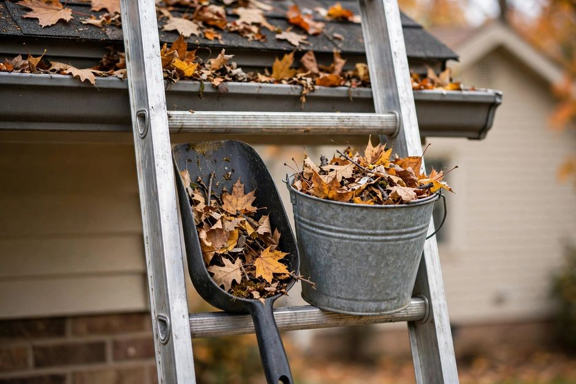
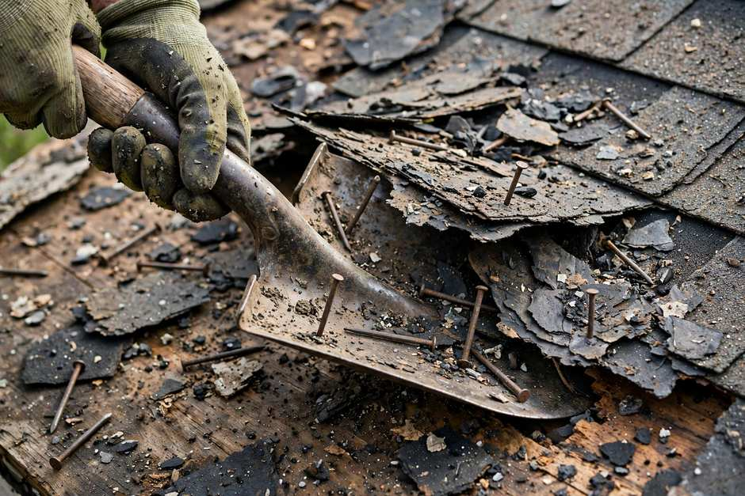
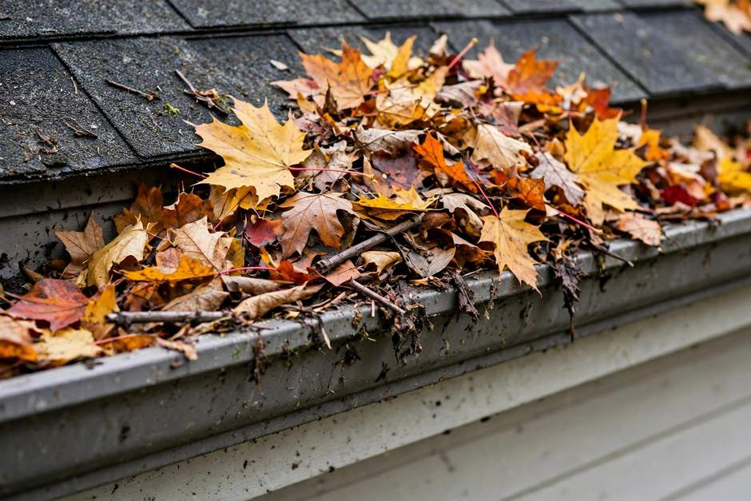

Is the roof leaking, and from where?
Stains and damp spots are traced to entry points through attic and surface checks. Where a breach is open, emergency roof repair covers temporary protection.
A roof inspection in Des Plaines, IL looks at the covering, flashing, valleys, penetrations, ridge, gutters, and accessible attic conditions, and leaves you with photos and written findings. It is the right first step before a repair, a replacement, a home sale, or a winter. Call (224) 802-4866 during office hours to discuss a visit.
Tell us what is happening with your roof. Office hours: Mon–Tue 7:30 AM–7:00 PM, Wed–Fri 7:30 AM–7:30 PM, Sat 8:30 AM–5:00 PM, Sun closed.
Call (224) 802-4866 → Phone is the only contact channel.
An inspection is a documented look at the whole roof system: the surface and shingles, the flashing at chimneys and walls, valleys, penetrations and pipe boots, the ridge, gutters and fascia, and the accessible attic — including ventilation conditions. Findings are recorded with photos and in writing, so decisions rest on what was actually seen rather than on a verbal impression.
Inspections matter most at turning points: after a hail or wind event, before winter sets in, when buying or selling, and on mid-century stock where the covering's history is unknown. A contractor inspection looks at condition and repair options; an independent inspection is the usual choice where a sale or an insurer needs a neutral report — the two are different products, and neither is described here as satisfying any insurer or lender requirement. Homes around downtown Des Plaines and Cumberland show the range: postwar ranches, split-levels, and downtown mixed stock, each with its own junctions. Terms for an inspection visit — what it covers and what it costs, if anything — are confirmed when you call; this page promises nothing about cost. What an inspection finds usually leads to roof repair or roof replacement, and ventilation findings lead to attic ventilation.
The items below describe what an inspection looks at. The inspection described is a direct visual inspection with photos and written findings. Maintenance items found during the visit are discussed as findings, not as a plan or subscription.
Granule loss, curling, cracking, missing shingles, and lifted tabs are recorded slope by slope. The pattern across slopes says more than any single shingle does.
Step flashing, counter-flashing, valley metal, pipe boots, and vent flashing are checked at every junction. Chimney flashing is checked as metalwork; masonry condition is noted as a separate trade's question.
Ridge caps, gutter condition and attachment, and fascia boards are looked at as the roof's edge. Blocked or failing gutters feed eave and ice-dam problems, and fascia condition decides whether gutters can be re-hung.
Where the attic is accessible, decking, daylight, stains, damp insulation, and ventilation paths are noted. Ventilation findings are described in general terms on the attic ventilation page; insulation levels are noted, not specified.
Findings are photographed and written down, slope by slope, so you hold the record. Basic upkeep found during the visit — debris in valleys, a slipped shingle, a joint that needs attention — is discussed as part of the findings. No maintenance plan or subscription is offered or implied here; each visit stands on its own.
Call during office hours and say why the inspection is wanted: after a storm, before winter, before a sale, or because something looks wrong. The reason shapes what gets the closest look.
Each slope, the ridge, flashing, valleys, and penetrations are looked at and photographed. Gutters and fascia are checked as part of the same edge.
Where accessible, the attic side of the decking, signs of past leaks, and ventilation paths are noted. Daylight through boards, stains on rafters, and damp insulation are recorded.
Photos and written findings are put together slope by slope, separating what needs attention soon from what can be planned for later. The record is yours to keep.
Findings usually point to repair, replacement, ventilation work, or simply watching and re-checking. Each option is discussed from the findings, with repair and replacement pages explaining the scopes.
Inspection is mostly looking, carefully, in the right places. The equipment below supports access, sight, and recording.
Access to the roof edge and, where the attic is accessible, to the attic. Roofs that are wet, icy, or too steep are assessed from the ground and the attic instead.
Photos record each finding in place, so the written findings can be checked against what was seen.
Attic inspection needs light: stains, daylight through boards, and damp insulation are easy to miss in the dark.
Where roof access is not safe, binoculars allow a closer look at slopes, ridge, and flashing from the ground.
Measurements record the size of affected areas and the roof's dimensions, which matter for any later scope discussion.
Findings are recorded slope by slope in writing, separating attention soon from later planning.
Granule loss, bruised shingles, lifted tabs, or nothing visible at all from the ground. Uncertainty is itself the reason to look.
Ask for slope-by-slope photos and written findings, and keep them dated. See storm damage roof repair for documentation guidance.
Loose flashing, blocked gutters, and ventilation paths that will feed ice dams once snow sits on the roof.
Ask what the inspection will cover at eaves and in the attic, and what gutter clearing before freeze is worth doing — see gutter installation.
A covering of unknown age, past repairs of unknown quality, and questions from buyers, sellers, or inspectors.
Ask whether a contractor inspection or an independent inspection fits the need — the two serve different purposes, and neither is promised here to satisfy any insurer or lender.
An inspection does not fix anything. It answers the questions that decide what, if anything, should be fixed — and in what order.
Ask a pro →Stains and damp spots are traced to entry points through attic and surface checks. Where a breach is open, emergency roof repair covers temporary protection.
Wear patterns across slopes, granule loss, and flashing condition together describe the covering's state. No finding here promises a number of remaining years.
Eave details, gutter condition, and attic ventilation decide how a roof meets snow and freeze–thaw. Ventilation findings are explained on the attic ventilation page.
Findings separate attention soon from later planning, so repair and replacement discussions start from evidence. See roof repair and roof replacement for the scopes.
“I use WP Exteriors to repaint my roof and do as some tuckpointing on the exterior of my building. Pat and his team were very professional and communicative. They did a good job explaining what needs to be done to my home immediately and what I can plan for in the future. I will definitely be using them in the future.”
Patricia MurrayGoogle review · 2 months ago
“Patryk was great to work with and extremely professional. I highly recommend WP exteriors and plan on using them again in the future!”
Brian Avila GaonaGoogle review · 5 months ago · Roof inspection
“I recently had the pleasure of working with WP Exterior for my roofing needs, and I must say, I couldn't be more satisfied with the outcome. From the moment I contacted them, it was evident that they truly value their customers. …”
Filip LiberaGoogle review · 2 years ago · Verbatim excerpt
An inspection covers the surface and shingles, flashing at chimneys and walls, valleys, penetrations and pipe boots, the ridge, gutters and fascia, and the accessible attic, including ventilation conditions. Findings are recorded with photos and in writing, slope by slope.
These are third-party guide ranges, not WP Exterior Inc prices. Holda's Northwest-suburbs guide describes a comprehensive on-site inspection in the Chicago suburbs as commonly around $100–$400. Chicago Storm Pros describes paid independent inspections in Chicagoland as generally $200–$600. Terms for an inspection from WP Exterior Inc — what the visit covers and what it costs, if anything — are confirmed when you call. A longer list, including second-hand national figures quoted via RNS Roofing, is collected in the inspection-cost guide on the blog, with a warning to check the original guides before relying on them.
After a hail or wind event, before winter, when buying or selling, and on mid-century stock where the covering's history is unknown. A contractor inspection looks at condition and repair options; an independent inspection is the usual choice where a sale or an insurer needs a neutral report. Neither is described here as satisfying any insurer or lender requirement.
Inspection terms are confirmed when you call, including what the visit covers. This page makes no promise about cost, and nothing is assumed until you have spoken with the office. Call (224) 802-4866 during office hours to discuss a visit.
 Skylight InstallationSkylight curbs and flashing are checked during an inspection. Replacement and reflashing where the skylight is the leak path.Explore →
Skylight InstallationSkylight curbs and flashing are checked during an inspection. Replacement and reflashing where the skylight is the leak path.Explore →
Roof ReplacementWhere an inspection finds widespread failure, replacement is the fuller answer — tear-off, ice barrier, flashing, and a new covering.Explore → Roof RepairWhere findings are local — one joint, one slope section — repair is scoped from the documented evidence.Explore →
Roof RepairWhere findings are local — one joint, one slope section — repair is scoped from the documented evidence.Explore → Attic VentilationVentilation findings from the attic side: ridge and soffit paths, ice-dam mechanics, and the insulation boundary.Explore →
Attic VentilationVentilation findings from the attic side: ridge and soffit paths, ice-dam mechanics, and the insulation boundary.Explore → Emergency Roof RepairWhere an inspection finds an open breach, temporary protection comes first. Safety steps while a repair is planned.Explore →
Emergency Roof RepairWhere an inspection finds an open breach, temporary protection comes first. Safety steps while a repair is planned.Explore → Storm Damage Roof RepairPost-storm findings belong with documentation guidance: hail and wind damage, and the insurance process in general terms.Explore →
Storm Damage Roof RepairPost-storm findings belong with documentation guidance: hail and wind damage, and the insurance process in general terms.Explore →
Gutter InstallationGutters, downspouts, fascia, and soffit — the edge an inspection checks, and the drainage that feeds eave problems.Explore → Flat Roof RepairLow-slope sections on additions and porches are inspected differently: seams, ponding, and membrane tie-ins.Explore →
Flat Roof RepairLow-slope sections on additions and porches are inspected differently: seams, ponding, and membrane tie-ins.Explore →Call (224) 802-4866 during office hours and say why an inspection is wanted. We will talk through what a visit covers and what the terms are, before anything is scheduled.
Call (224) 802-4866 →Call (224) 802-4866 during office hours to talk about your roof. Tell us what you are seeing — a stain, a missing shingle, damage after a storm — and we will talk through what a visit would look at. Office hours: Monday and Tuesday 7:30 AM–7:00 PM, Wednesday through Friday 7:30 AM–7:30 PM, Saturday 8:30 AM–5:00 PM, Sunday closed.